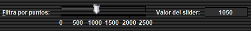
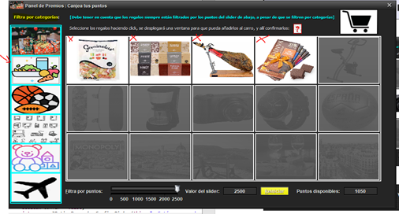

Los regalos se pueden filtrar por puntos (y por categoría), es decir, podemos hacer que se muestren disponibles aquellos
cuyo valor por unidad sea menor o igual al indicado por el JSlider, esto no quiere decir que si ponemos más puntuación de la
que tenemos en el JSlider podamos comprar artículos cuyo precio es superior al disponible, le avisará la aplicación del consecuente error.
Obviamente, si filtramos los regalos por puntuación inferior a la disponible, nos dejará comprar los regalos igualmente a pesar de no coincidir con la disponible.

En la imagen, podemos ver como se están filtrando los artículos por la categoría “Alimentación”, y por 2500 puntos (el máximo, a pesar de que solo tenemos 1050,
esto lo hacemos para que se vean todos los artículos de esa categoría como disponibles). Tenga en cuenta de que a pesar de que se presione los botones de filtrar
por una categoría, los artículos también están filtrados por los puntos del JSlider de abajo.
En la imagen de abajo se ha pulsado la imagen de la categoría “Alimentación” y por 2500 puntos, por lo que aparecerán todos los regalos de esa categoría disponibles.
El botón de arriba de este serviría para eliminar el filtrado por categorías, y el Reiniciar serviría para eliminar tanto el filtrado por categorías como por puntos.
